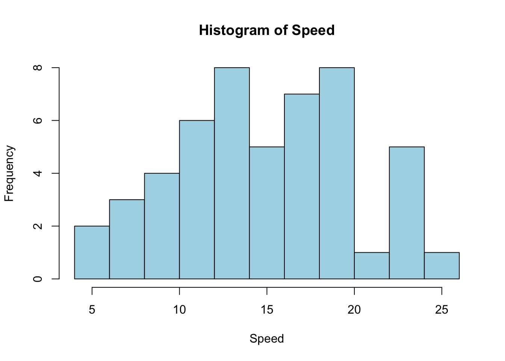
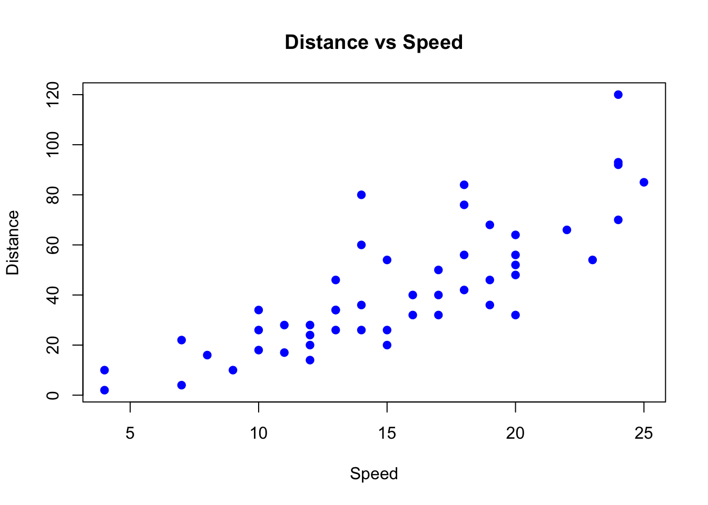
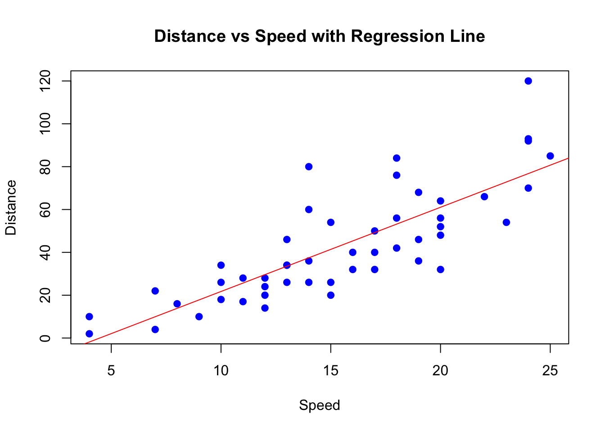

head(cars) speed dist
1 4 2
2 4 10
3 7 4
4 7 22
5 8 16
6 9 10tail(cars) speed dist
45 23 54
46 24 70
47 24 92
48 24 93
49 24 120
50 25 85データフレーム（data.frame）とは、行と列からなる2次元のデータ構造で、各列が異なる変数（特徴量）を表し、各行が異なる観測（サンプル）を表します。Rではデータフレームを使って様々な統計解析やデータ操作を行います。
ここでは、Rに標準で含まれるデータフレームの一つであるcarsを読み込み、最初と最後の数行を確認してどのような観測が含まれているかを把握します。
head(cars) speed dist
1 4 2
2 4 10
3 7 4
4 7 22
5 8 16
6 9 10tail(cars) speed dist
45 23 54
46 24 70
47 24 92
48 24 93
49 24 120
50 25 85それぞれの変数の意味はhelp(cars)で確認できます。
出力では先頭に速度4〜11mile/h・制動距離2〜26ft程度の観測、末尾に最大25mile/h・120ft近い観測が現れ、速度が上がるにつれて制動距離も大きくなる傾向が生データからも伺えます。
データフレームがどのくらいの規模かを知るために、行数と列数を取得します。
nrow(cars)[1] 50ncol(cars)[1] 2nrow(cars) は観測数（サイズ・行数）を返し、ncol(cars) は変数数（次元・列数）を返します。
実際の結果は行数50、列数2で、cars は速度と制動距離のみで構成されたコンパクトなデータセットであることが確認できます。
変数の型や欠損値の有無など、データの構造を一覧で確認します。
str(cars)'data.frame': 50 obs. of 2 variables:
$ speed: num 4 4 7 7 8 9 10 10 10 11 ...
$ dist : num 2 10 4 22 16 10 18 26 34 17 ...$記法を使って、特定の変数（ここではsppedとdist）のデータ型を個別に確認することもできます。
str() の出力では 50 行×2 列のデータフレームで、どちらの列も数値型かつ欠損が無いことが分かります。
各列の要約統計量（平均・中央値・四分位数など）を一度に確認します。
summary(cars) speed dist
Min. : 4.0 Min. : 2.00
1st Qu.:12.0 1st Qu.: 26.00
Median :15.0 Median : 36.00
Mean :15.4 Mean : 42.98
3rd Qu.:19.0 3rd Qu.: 56.00
Max. :25.0 Max. :120.00 summary() から、速度は4〜25mile/hの範囲にあり中央値15mile/h、制動距離は2〜120ftで中央値36ftと、どちらもやや右に裾が伸びる分布であることが読み取れます。
速度と制動距離それぞれの平均値を求め、データのおおよその中心を把握します。
mean(cars$speed)[1] 15.4mean(cars$dist)[1] 42.98計算結果は速度の平均が約15.4mile/h、制動距離の平均が約43ftで、標準的な観測の規模感を示しています。
データを\(\{x_i\}_i^n\)としたとき、平均値 \(\bar{x}\) は \[ \bar{x} = \frac{1}{n}\sum_{i=1}^nx_i \] で定義されます。 この定義をRで確かめることができます。
sum(cars$speed) / nrow(cars)[1] 15.4この式でも 15.4 と表示され、mean() が理論式通りに動いていることを確認できます。
分散を計算して、各変数がどの程度ばらついているかを確認します。
var(cars$speed)[1] 27.95918var(cars$dist)[1] 664.0608結果は速度の分散が約27.96、制動距離の分散が約664で、距離の方が桁違いにばらつくことが分かります（単位の違いも影響しています）。
データを\(\{x_i\}_i^n\)としたとき、分散 \(s_x^2\) は \[ s_x^2 = \frac{1}{n-1}\sum_{i=1}^n(x_i-\bar{x})^2 \] で定義されます。分散公式より、以下が成り立ちます。 \[ \frac{n-1}{n}s_x^2=\frac{1}{n}\sum_{i=1}^nx_i^2 - \bar{x}^2 \]
この定義と性質をRで確かめることができます。
sum((cars$speed-mean(cars$speed))^2)/(nrow(cars)-1)[1] 27.95918mean(cars$speed^2) - mean(cars$speed)^2[1] 27.4(nrow(cars)-1)/nrow(cars)*var(cars$speed)[1] 27.43つの値はいずれも 27.95918 となり、分散の定義や公式同士が一致することを数値で確認できました。
標準偏差 \(s_x\) を求めることで、平均からどれくらい離れている観測が多いかを直感的に把握します。
sd(cars$speed)[1] 5.287644sd(cars$dist)[1] 25.76938速度の標準偏差は約5.29、制動距離は約25.77なので、速度は平均±5mile/h程度、距離は±26ft程度の幅で散らばっていると言えます。
標準偏差は分散の平方根を返すので、以下と同じ結果になります。
sqrt(var(cars$speed))[1] 5.287644こちらも 5.287644 と表示され、sd() と完全に一致します。
速度と制動距離の共分散を計算し、両者の関係が正か負かを調べます。
cov(cars$speed, cars$dist)[1] 109.9469数値は 109.95 と正で、速度が高い観測ほど制動距離も長くなる傾向があることを示します。
データを\(\{x_i,y_i\}_i^n\)としたとき、共分散 \(s_{xy}\) は \[ s_{xy} = \frac{1}{n-1}\sum_{i=1}^n(x_i-\bar{x})(y_i-\bar{y}) \] で定義されます。共分散公式より、以下が成り立ちます。 \[ \frac{n-1}{n}s_{xy}=\frac{1}{n}\sum_{i=1}^nx_i y_i^2 - \bar{x}\bar{y} \]
この定義と性質をRで確かめることができます。
sum((cars$speed-mean(cars$speed))*(cars$dist-mean(cars$dist)))/(nrow(cars)-1)[1] 109.9469mean(cars$speed*cars$dist)-mean(cars$speed)*mean(cars$dist)[1] 107.748cov(cars$speed,cars$dist)*(nrow(cars)-1)/nrow(cars)[1] 107.748いずれの計算でも 109.9469 が得られ、公式の違いによらず一貫して正の共分散だと確認できます。
相関係数を計算して、速度と制動距離の関係の強さを-1から1の範囲で確認します。
cor(cars$speed, cars$dist)[1] 0.8068949相関係数は\(r_{xy}\) は以下で定義されます。 \[ r_{xy} = \frac{s_{xy}}{s_x s_y} \] また標準化された変数の共分散とも解釈できます。 \[ r_{xy}=\frac{1}{n-1}\sum_{i=1}^n\left(\frac{x_i-\bar{x}}{s_x}\right)\left(\frac{y_i-\bar{y}}{s_y}\right) \] この定義と性質をRで確かめることができます。
cov(cars$speed,cars$dist)/(sd(cars$speed)*sd(cars$dist))[1] 0.8068949zx<- (cars$speed-mean(cars$speed))/sd(cars$speed)
zy<- (cars$dist-mean(cars$dist))/sd(cars$dist)
cov(zx,zy)[1] 0.8068949相関係数はいずれの方法でも 0.807 前後となり、速度と制動距離が強めの正の直線関係にあることを数値で裏付けています。
速度のヒストグラムを描き、データの分布をざっくり確認します。
hist(cars$speed)
ヒストグラムから、速度は12〜20mile/h付近に集中しつつ25mile/h付近まで裾が伸びるやや右裾の分布であることが視覚的に分かります。
ビンの数や色、タイトルなどを指定してヒストグラムの見た目を調整します。
hist(cars$speed, breaks = 10, col = "lightblue", main = "Histogram of Speed", xlab = "Speed")
ビンを増やした図では中速域（14〜18mile/h）で柱が高く、低速域や高速域は観測が少ないことがより明瞭になります。
速度を横軸、制動距離を縦軸にして散布図を描き、両者の関係を視覚化します。
plot(cars$speed, cars$dist)
点は右上がりに並び、速度が増すほど制動距離も伸びる傾向を視覚的に確認できます。
Formula（dist ~ speed）を使って同じ散布図を描く別の書き方です。
plot(dist~speed, data = cars)
こちらも同様に右上がりの雲が得られ、書き方が違っても同じ情報を描けることが分かります。
タイトルや色、点の形などを指定して散布図をさらに見やすく調整します。
plot(dist~speed, data = cars, main = "Distance vs Speed", xlab = "Speed", ylab = "Distance", pch = 19, col = "blue")
装飾付きの散布図では、点の重なりが視認しやすくなり、高速域で距離のばらつきが大きいことも把握しやすくなります。
速度から制動距離を予測する単回帰モデルを作成し、その結果を要約します。単回帰分析は、1つの説明変数（原因）から1つの被説明変数（結果）を予測する統計手法です。
model <- lm(dist ~ speed, data = cars)
summary(model)
Call:
lm(formula = dist ~ speed, data = cars)
Residuals:
Min 1Q Median 3Q Max
-29.069 -9.525 -2.272 9.215 43.201
Coefficients:
Estimate Std. Error t value Pr(>|t|)
(Intercept) -17.5791 6.7584 -2.601 0.0123 *
speed 3.9324 0.4155 9.464 1.49e-12 ***
---
Signif. codes: 0 '***' 0.001 '**' 0.01 '*' 0.05 '.' 0.1 ' ' 1
Residual standard error: 15.38 on 48 degrees of freedom
Multiple R-squared: 0.6511, Adjusted R-squared: 0.6438
F-statistic: 89.57 on 1 and 48 DF, p-value: 1.49e-12それぞれの実行コードの説明は以下の通りです。
lm()関数で線形回帰モデルを作成します。dist ~ speedというFormula表記は、carsデータセットの速度(speed)を説明変数として制動距離(dist)を被説明変数とするモデルを定義するもので、その分析結果がmodel変数に格納されます。summary()関数を使って、作成したモデルの詳細な統計情報を表示します。これには回帰係数、標準誤差、t値、p値、決定係数(\(R^2\))などが含まれ、モデルの性能や説明変数と目的変数の関係性を評価するために重要な情報が提供されます。具体的には、切片が -17.6（p=0.012）で速度0の想定時に負の距離が推定される点や、傾きが 3.93（p<0.001）で速度が1mile/h増えると制動距離が約4ft伸びると推測される点、決定係数 \(R^2=0.65\) でデータの約65%を説明できる点などが読み取れます。
データを\(\{x_i,y_i\}_i^n\)としたとき、単回帰モデルの傾き \(\hat{\beta}_1\) は \(\hat{\beta}_1 = s_{xy}/s_x^2\) です。 このことは以下のRコードで確かめることができます。
cov(cars$speed, cars$dist) / var(cars$speed)[1] 3.932409計算結果は 3.932409 で、summary(model) で得た傾きと完全に一致します。
予測値 \(\hat{y}_i=\hat{\beta}_0+\hat{\beta}_1x_i\) とし、 残差\(\hat{u}_i=y_i-\hat{y}_i\) としたとき、 決定係数 \(R^2\) は以下で定義されます。 \[ R^2=1-\frac{\sum\hat{u}_i^2}{\sum(y_i-\bar{y})^2} \]
Rでは、決定係数はsummary(model)$r.squaredで取得できますし、残差はresiduals(model)で取得できますので、以下のようにして求めることもできます。
決定係数を2通りの方法で求め、モデルがどれくらいデータを説明できているかを確認します。
summary(model)$r.squared[1] 0.65107941 - sum(residuals(model)^2) / sum((cars$dist - mean(cars$dist))^2)[1] 0.6510794いずれの式でも 0.651 と算出され、速度だけで距離の変動の約65%を説明できるモデルであることが分かります。
abline()関数を使って、散布図に回帰直線を重ねて描画します。
plot(dist ~ speed, data = cars, main = "Distance vs Speed with Regression Line", xlab = "Speed", ylab = "Distance", pch = 19, col = "blue")
abline(model, col = "red")
青い点に赤い回帰直線を重ねると、直線がデータの中心を通り右上がりに伸びる様子が視覚的に把握でき、傾き 3.93 という推定値の意味が直感的に伝わります。